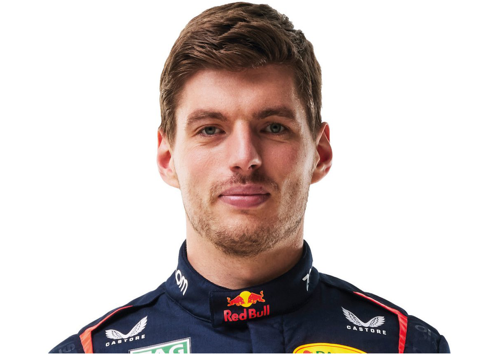
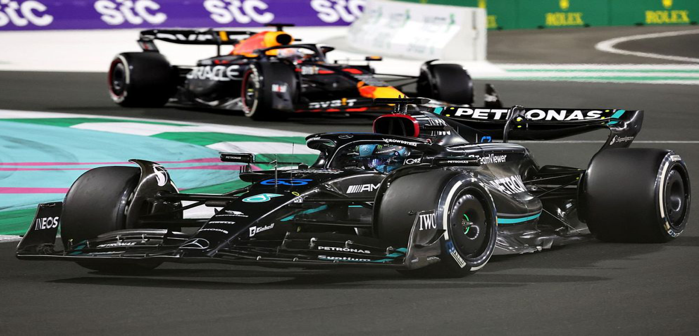

Formula News
MAX VERSTAPPEN WINS THE SPANISH GRAND PRIX
Red Bull’s Max Verstappen prevailed in a tense, strategic battle with McLaren’s Lando Norris to win the Spanish Grand Prix.
Verstappen’s seventh victory in 10 races this year hinged on a decisive opening phase of the race from the Dutchman.
Verstappen was in the lead by lap three while Norris stayed stuck behind Mercedes’ George Russell for 15 laps.
Lewis Hamilton took his first podium finish of the year for Mercedes in third, ahead of Russell, as Britons finished second, third and fourth. Charles Leclerc was fifth, leading home Ferrari team-mate Carlos Sainz.
The race underlined the fact that Red Bull have lost the massive advantage they held over the first five races of the season, but also that Verstappen is operating at a level of consistent excellence in the cockpit and will be tough to beat - not only for the championship, on which he has a stranglehold, but also on individual race weekends.
McLaren have been on Red Bull’s pace since the Miami Grand Prix in early May, and Verstappen has not taken a pole position since the Chinese Grand Prix in April.
Even so, Verstappen has won three of the past five races and consolidated his championship advantage.
Norris has moved ahead of Leclerc into second place but is 69 points behind Verstappen after 10 of 24 races.
"I should have won it," Norris said. "I got a bad start, as simple as that. The car was incredible today, we were for sure the quickest, I just lose it in the beginning.
"Disappointed but a lot of positives. One negative and that kind of ruined everything. I know that I can just work on it for next time."
Verstappen decisive and imperious
Verstappen grabbed the race by the throat with a brilliant opening few laps at the Circuit de Barcelona-Catalunya.
He made a slightly better start than Norris and was able to get his front wing inside the McLaren on the run to the first corner.
Norris defended robustly, even forcing Verstappen on to the grass, but was able to fend off the Red Bull.
Verstappen passed Norris on the inside as Russell took advantage of their tussle to pass both to grab the lead from fourth on the grid.
Verstappen then passed Russell at the start of lap three in a decisive and committed move around the outside of Turn One, while Norris was stuck behind the Mercedes for a further 12 laps. The Dutchman said this phase "made the race for him".
It forced Norris and McLaren into an off-set strategy, trying to run longer and then come back at Verstappen on fresher tyres.
But it left him too much to do and he had to settle for second behind the Red Bull driver, who yet again proved himself the class of the field.
Verstappen had a four-second advantage when he made his first stop on lap 17, and McLaren decided to leave Norris out, waiting a further seven laps before his stop.
He had to fight his way back past first the Ferrari of Carlos Sainz and then the Mercedes of Russell and Hamilton before closing in on Verstappen.